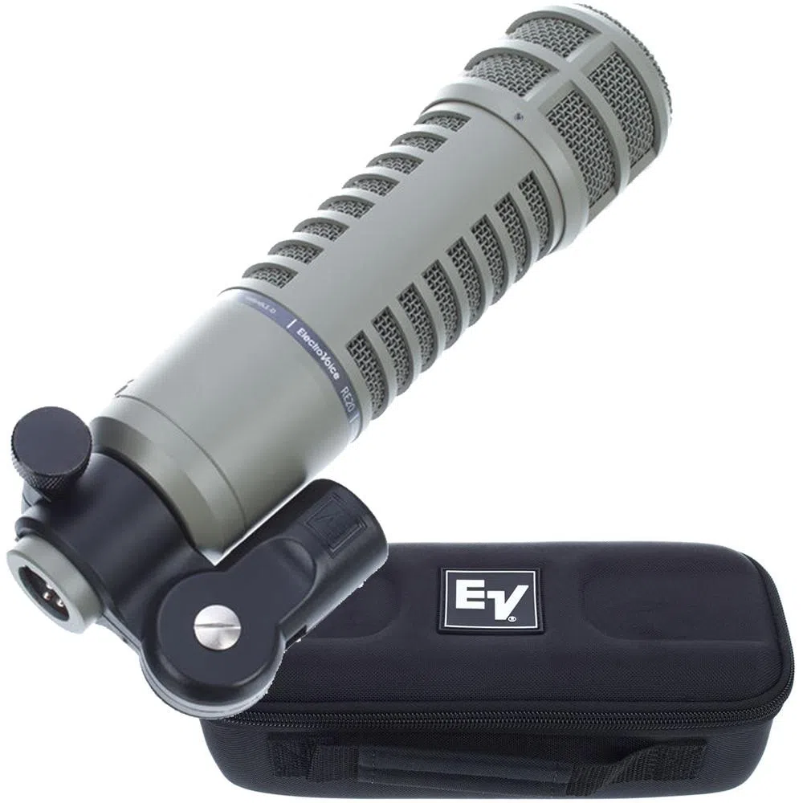
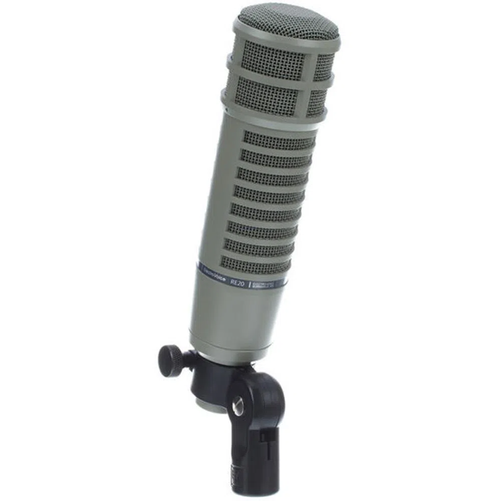
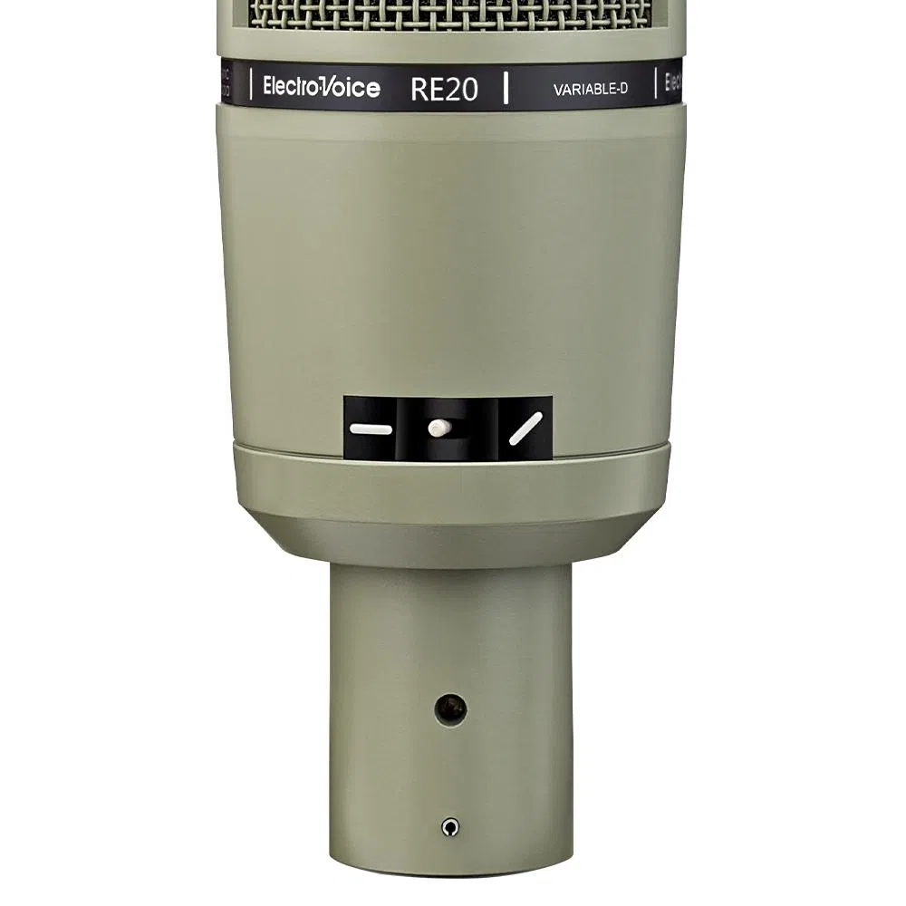
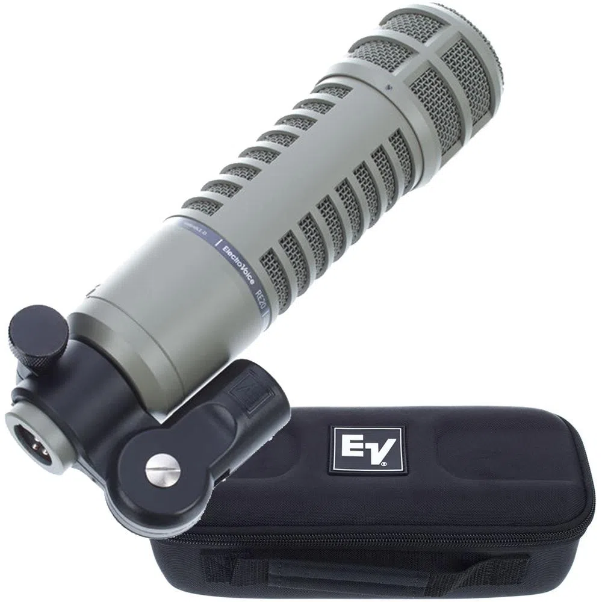
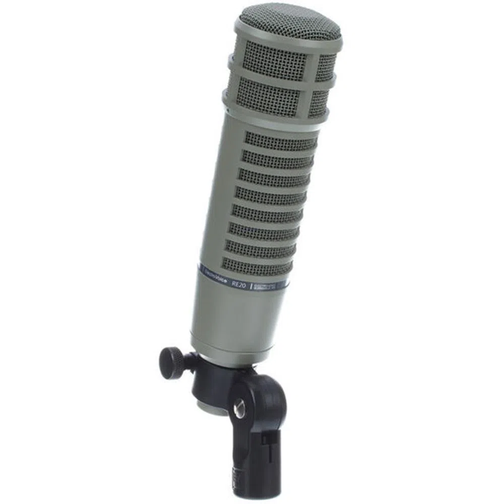
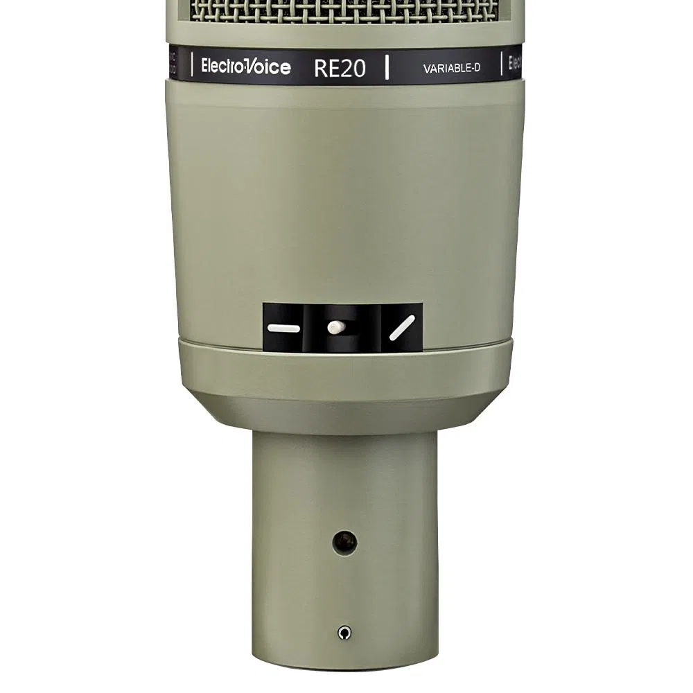

Microfone Dinâmico Para Locução Electrovoice RE20
Sobre
MICROFONE C/ FIO ELECTRO-VOICE RE 20 | DINÂMICO | CARDIÓIDE | 150 OHMS
MODELO: ELECTRO-VOICE RE20
Padrão na indústria de transmissão, o Microfone para Locução de Rádio/TV com D-Variável Electro-Voice RE-20 é um microfone cardióide dinâmico capaz de
garantir uma performance confiável com baixo ruído, além de excepcional clareza e definição. Possui resposta otimizada especialmente para vocais com recursos
para suportar alta pressão sonora, é construido em aço resistente com baixo ruído causado por manuseio, seu padrão polar super cardióide é extremamente eficaz no
isolamento de fontes sonoras e na redução de ruídos de fundo, filtro interno de vento e sopro que elimina ruídos causados por ventos e ""pop"" nas regiões mais
próximas, seletor ""bass tilt down"" que corrige o balanço do espectro em situações de longo alcance e elimina ruídos de baixa frequência e a resposta de
frequência plana do RE-20 permanece plana mesmo até em distâncias muito próximas.
Ficha Técnica:
- Transdutor: Dinâmico
R$5.940,00 à vista